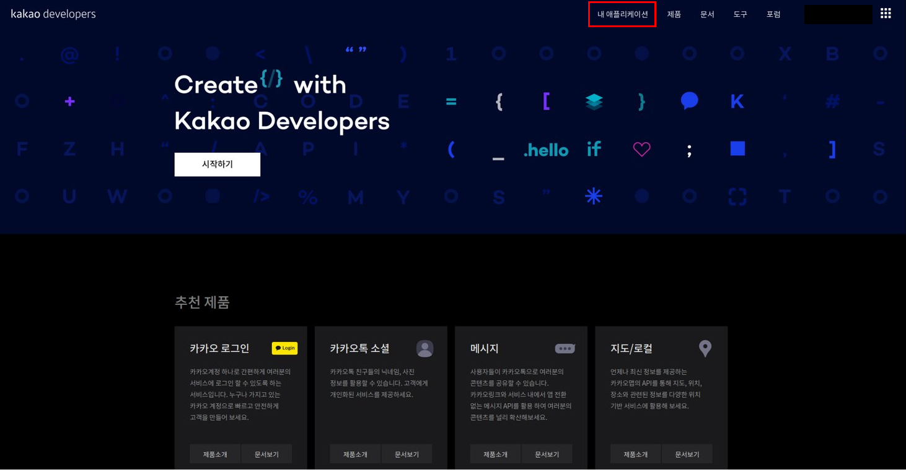
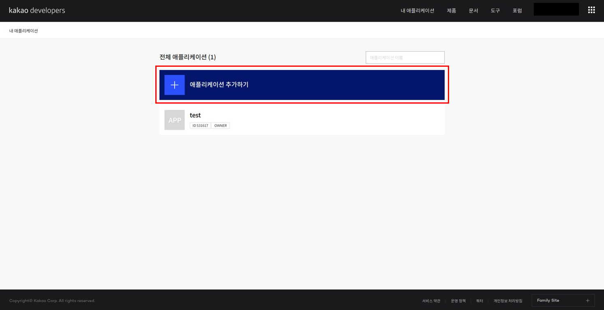

KAKAO API¶
본 문서는
kakao rest api key를 발급받는 방법에 대해 안내합니다.Speech 기능을 사용하기 위해 kakao developers 회원가입 후 REST API 키를 발급받아야 합니다.
로그인 후 [내 애플리케이션] 클릭

[애플리케이션 추가하기] 클릭

앱 이름 및 사업자명 입력 후 저장

새로 생성한 애플리케이션 클릭

config.py에 발급받은 REST API 키 입력 후, 왼쪽의 [음성] 클릭

이후
/home/pi/config.json의KAKAO_ACCOUNT에 발급받은REST API 키입력{ "DATA_PATH":"/home/pi/x-openpibo-data/data/", "KAKAO_ACCOUNT": "<여기에 발급받은 REST API 키를 입력해주세요>", "robotId": "" }
활성화 설정의 [OFF] 버튼 클릭

사용 목적 입력 후 저장

활성화 설정의 상태가 [ON]으로 바뀌면 완료